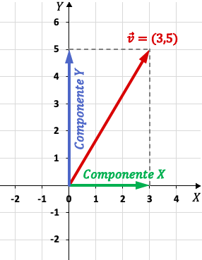
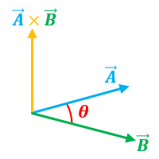

Cuando nos dicen una vantidad, esta puede estar expresada solo
numericamente; como el tiempo. Hay otras que son completas porque dan
la dirección, como el desplazamiento, la aceleración, la fuerza y
muchos más.
Estas son cantidades matemáticas que tienen magnitud y
dirección, estos se denotan a modo de coordenadas
Componentes de un Vector
Los componentes de un vector se determinan usando la definición de las funciones trigonométricas
v=(x,y)
V= Xi+ Yj

Adición y sustraccion de vectores
Hay dos formas de sumarlos, de manera gráfica uniendolos, y de
manera algebraica donde V= V₁ + V.
Para restarlos de manera grafica es lo mismo que en la suma
pero al reves, yo me entiendo
Multiplicación de vectores
Para multiplicar se hace en matrices y es el producto cruz, devuelve un vector perpendicular
Magnitud de vectores
Es cuanto mide el vector, me acuerdo porque lo utilizamos mucho, se calcula con el teorema de pitágoras, en dos y tres dimensiones.